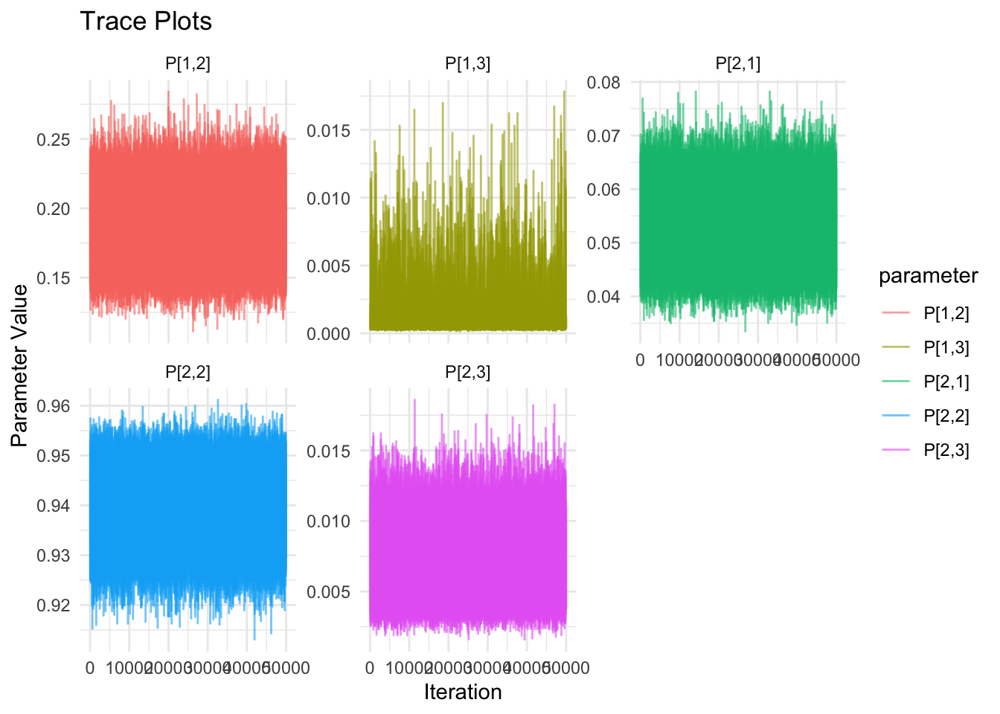
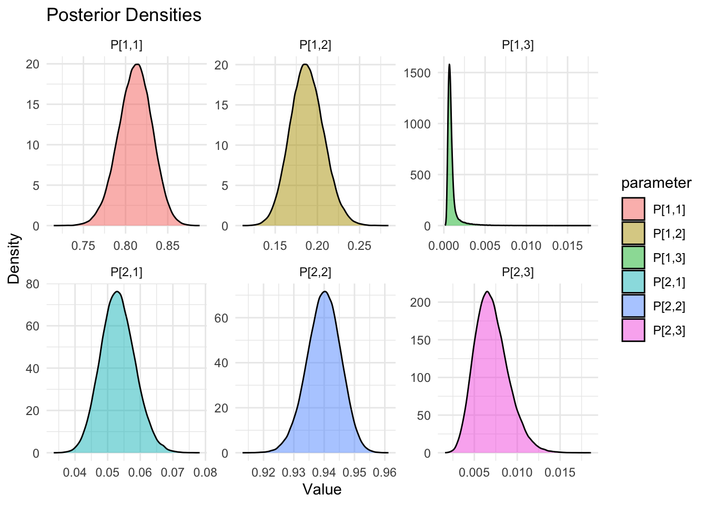

Show the code
library(rjags)
library(ggplot2)
library(coda)
library(dplyr)
library(tidyr)This document implents a JAGS model for the 4-state network meta-analysis model described in the book Network Meta-Analysis for Decision-Making by Sofia Dias, A.E. Ades, Nicky J. Welton, Jeroen P. Jansen, and Alexander J. Sutton.
library(rjags)
library(ggplot2)
library(coda)
library(dplyr)
library(tidyr)The ransition probabilities P[i,j] were derived from by symbolically solving the Kolmogorov forward equations using the Julia language and translated into R syntax which is understood by JAGS. The original very long Julia expressions were also broken down into smaller terms to make them more easily digestible by the JAGS compiler
model_string <- "
model {
# Multinomia Likelihood
# for (i in 1:3){ r[i, 1:3] ~ dmulti(P[i, 1:3], n[i])
# }
q1 <- Q[1,2] + Q[1,3]
q2 <- Q[2,1] + Q[2,3]
h <- sqrt( (q1 - q2)^2 + 4 * Q[1,2] * Q[2,1] )
e1 <- exp(-.5*(q1 + q2 - h) * t)
e2 <- exp(-.5*(q1 + q2 + h) * t)
P[1,1] <- ( (-q1 + q2 + h) * e1 + (q1 - q2 + h) * e2) / (2 * h)
P[1,2] <- (( -q1 + q2 + h) * (q1 - q2 + h) * (e1 - e2)) / ( 4 * h * Q[2,1])
P[1,3] <- 1 - P[1,1] - P[1,2]
P[2,1] <- Q[2,1] * (e1 - e2) / h
P[2,2] <- ((q1 - q2 + h) * e1 + (-q1 + q2 + h) * e2) / (2 * h)
P[2,3] <- 1 - P[2,1] - P[2,2]
P[3,1] <- 0
P[3,2] <- 0
P[3,3] <- 1
# Normalized transition probabilities are used to stabilize the model
# If p[1,j] is exactly 0 or NA due to symbolic math breakdowns
# (e.g., division by row2_sum = 0), the likelihood becomes invalid
# triggering that dreaded “Invalid parent values” error.
# max(max(...), ε) acts like a soft-clipping threshold to guarantee numerical safety.
# ---------- p[1,j] ----------
row1_sum <- P[1,1] + P[1,2] + P[1,3]
p[1,1] <- max(max(P[1,1] / row1_sum, 0), 0.000001)
p[1,2] <- max(max(P[1,2] / row1_sum, 0), 0.000001)
p[1,3] <- max(max(P[1,3] / row1_sum, 0), 0.000001)
r[1,1:3] ~ dmulti(p[1,1:3], n[1])
# ---------- p[2,j] ----------
row2_sum <- P[2,1] + P[2,2] + P[2,3]
p[2,1] <- max(max(P[2,1] / row2_sum, 0), 0.000001)
p[2,2] <- max(max(P[2,2] / row2_sum, 0), 0.000001)
p[2,3] <- max(max(P[2,3] / row2_sum, 0), 0.000001)
r[2,1:3] ~ dmulti(p[2,1:3], n[2])
# ---------- p[3,j] ----------
row3_sum <- P[3,1] + P[3,2] + P[3,3]
p[3,1] <- max(max(P[3,1] / row3_sum, 0), 0.000001)
p[3,2] <- max(max(P[3,2] / row3_sum, 0), 0.000001)
p[3,3] <- max(max(P[3,3] / row3_sum, 0), 0.000001)
r[3,1:3] ~ dmulti(p[3,1:3], n[3])
# Priors for transition rates
Q[1,2] ~ dgamma(0.1, 0.1)
Q[1,3] ~ dgamma(0.1, 0.1)
Q[1,1] <- -(Q[1,2] + Q[1,3])
# Priors from state 2
Q[2,1] ~ dgamma(0.1, 0.1)
Q[2,3] ~ dgamma(0.1, 0.1)
Q[2,2] <- -(Q[2,1] + Q[2,3])
# Priors for state 3
Q[3,1] ~ dgamma(0.1, 0.1)
Q[3,2] ~ dgamma(0.1, 0.1)
Q[3,3] <- -Q[3,1] - Q[3,2]
}
"
writeLines(model_string, "3-state.bug")# Initialize model
r <- matrix(c(310, 72, 0,
97, 1716, 13,
0, 0, 94), nrow=3, ncol=3, byrow=TRUE)
n <- rowSums(r)
data_list <- list(
r = r,
n = n,
t = 12)
# Rate matrix Q
inits <- function() {
list(
Q = matrix(c(0.0, 0.1, 0.1,
0.1, 0.0, 0.1,
0.1, 0.1, 0.0), nrow=3, byrow=TRUE)
)
}
parameters.to.save = c("Q[1,1]", "Q[1,2]", "Q[1,3]",
"Q[2,1]", "Q[2,2]", "Q[2,3]",
"Q[3,1]", "Q[3,2]", "Q[3,3]",
"P[1,1]", "P[1,2]", "P[1,3]",
"P[2,1]", "P[2,2]", "P[2,3]",
"P[3,1]", "P[3,2]", "P[3,3]",
"p[1,1]", "p[1,2]", "p[1,3]",
"p[2,1]", "p[2,2]", "p[2,3]",
"p[3,1]", "p[3,2]", "p[3,3]"
)
jags_model <- jags.model(file = "3-state.bug",
data = data_list,
n.chains = 3,
n.adapt = 100)Compiling model graph
Resolving undeclared variables
Allocating nodes
Graph information:
Observed stochastic nodes: 3
Unobserved stochastic nodes: 6
Total graph size: 90
Initializing model# Burn-in
update(jags_model, 10000) #Discard these samplesThis code uses the coda.samples function to draw samples from the JAGS model. The number of iterations is set to 5000, which can be adjusted based on convergence diagnostics and model complexity.
samples <- coda.samples(jags_model,
variable.names = c(
"Q[1,1]", "Q[1,2]", "Q[1,3]",
"Q[2,1]", "Q[2,2]", "Q[2,3]",
"Q[3,1]", "Q[3,2]", "Q[3,3]",
"P[1,1]", "P[1,2]", "P[1,3]", # cap P are the transition probabilities
"P[2,1]", "P[2,2]", "P[2,3]",
"p[1,1]", "p[1,2]", "p[1,3]", # small p are the normalized transition
"p[2,1]", "p[2,2]", "p[2,3]", # probabilities use to stabilize the model
"p[3,1]", "p[3,2]", "p[3,3]"
),
n.iter = 50000,
n.thin = 10
)This code constructs, P, the matrix of transition probabilities. Prints out P and the row sums of P. Since P is a stochastic matrix, the row sums should be 1.
states <- c("STW", "UTW-X", "F")
smry <- summary(samples)
smry_df <- as.data.frame(smry[1])
names(smry_df) <- c("Mean", "SD", "Naive_SE", "Time_Series_SE")
P_rows <- smry_df[grep("^P\\[", rownames(smry_df)), ]
P <- matrix(P_rows[,1], nrow = 3, ncol = 3, byrow = TRUE)
colnames(P) <- states
rownames(P) <- states
P STW UTW-X F
STW 0.81129254 0.1877344 0.0009730112
UTW-X 0.05315754 0.9398208 0.0070216967
F 0.81129254 0.1877344 0.0009730112rowsum_P <- rowSums(P)
names(rowsum_P) <- c("Row1", "Row2", "Row3")
rowsum_PRow1 Row2 Row3
1 1 1 This code constructs the Generator matrix for the Markov, which contains the process rates, lambda. Rows of the generator matrix should sum to 0.
Q_rows <- smry_df[grep("^Q", rownames(smry_df)), ]
Q <- matrix(Q_rows[,1], nrow = 3, ncol = 3, byrow = TRUE)
colnames(Q) <- states
rownames(Q) <- states
Q STW UTW-X F
STW -0.018031280 0.01800716 2.411757e-05
UTW-X 0.005093652 -0.00569723 6.035777e-04
F 0.983495948 1.00421897 -1.987715e+00cat("\n row sums:")
row sums:rowsum_Q <- rowSums(Q)
names(rowsum_Q) <- c("Row1", "Row2", "Row3")
rowsum_Q Row1 Row2 Row3
-1.131636e-18 0.000000e+00 0.000000e+00 This code constructs the matrix p of normalized transition probabilities matrix. These were computed by JAGS as a check on the stabiliy of the model. P and p should agree fairly closely.
p_rows <- smry_df[grep("^p\\[", rownames(smry_df)), ]
p <- matrix(P_rows[,1], nrow = 3, ncol = 3, byrow = TRUE)
colnames(p) <- states
rownames(p) <- states
p
rowsum_p <- rowSums(p)
names(rowsum_p) <- c("Row1", "Row2", "Row3")
rowsum_pThis code sets up for plotting MCMC diagnostics.
# Convert JAGS samples to a data frame
samples_df <- as.data.frame(as.mcmc(do.call(rbind, samples)))
# Optional: print a few raw samples
cat("\n Transition Probabilities:\n")
Transition Probabilities:round(head(samples_df[,1:6]),3) P[1,1] P[1,2] P[1,3] P[2,1] P[2,2] P[2,3]
1 0.813 0.187 0.001 0.056 0.939 0.005
2 0.804 0.195 0.001 0.058 0.937 0.006
3 0.770 0.229 0.001 0.053 0.941 0.005
4 0.831 0.169 0.001 0.048 0.945 0.007
5 0.841 0.159 0.001 0.048 0.944 0.008
6 0.796 0.204 0.001 0.054 0.940 0.006cat("\n Process Rates:\n")
Process Rates:round(head(samples_df[,7:15]),3) Q[1,1] Q[1,2] Q[1,3] Q[2,1] Q[2,2] Q[2,3] Q[3,1] Q[3,2] Q[3,3]
1 -0.018 0.018 0 0.005 -0.006 0.000 6.900 0.000 -6.900
2 -0.019 0.019 0 0.006 -0.006 0.000 0.000 5.030 -5.030
3 -0.022 0.022 0 0.005 -0.006 0.000 0.000 0.000 0.000
4 -0.016 0.016 0 0.005 -0.005 0.001 7.017 29.658 -36.675
5 -0.015 0.015 0 0.004 -0.005 0.001 0.000 0.001 -0.001
6 -0.020 0.020 0 0.005 -0.006 0.001 0.045 0.186 -0.231# Convert mcmc.list to data frame and add chain + iteration info
df_long <- do.call(rbind, lapply(1:length(samples), function(chain) {
as.data.frame(samples[[chain]]) %>%
mutate(
iteration = row_number(),
chain = factor(chain)
)
})) %>%
pivot_longer(cols = -c(iteration, chain),
names_to = "parameter",
values_to = "value")ggplot(df_long %>% filter(parameter %in% c("P{1,1]", "P[1,2]", "P[1,3]",
"P[2,1]", "P[2,2]", "P[2,3]",
"P[3,1]", "P[3,2]", "P[3,3]")),
aes(x = iteration, y = value, color = parameter)) +
geom_line(alpha = 0.6) +
facet_wrap(~parameter, scales = "free_y") +
labs(title = "Trace Plots", x = "Iteration", y = "Parameter Value") +
theme_minimal()
ggplot(df_long %>% filter(parameter %in% c("P[1,1]", "P[1,2]", "P[1,3]",
"P[2,1]", "P[2,2]", "P[2,3]")),
aes(x = value, fill = parameter)) +
geom_density(alpha = 0.5) +
facet_wrap(~parameter, scales = "free") +
labs(title = "Posterior Densities", x = "Value", y = "Density") +
theme_minimal()